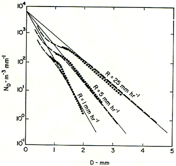

Notes on the Marshall-Palmer distribution and the Z-RR relation#
Reading: Stull chapter 8, pages 245 - 248 on radar reflectivity rain rate and bright band.
A brief backgrounder in where Stull gets his equation 8.30 on page 247:
This equation works because the collision/coalescence process for rain formation produces a remarkably regular distribution of droplet sizes for different rainrates, essentially “fingerprinting” the rain rate with its drop-size distribution, which produces a unique value of the radar reflectivity.
In 1947 Marshall and Palmer published their measurements of rain drop size as a function of rain rate:
These results are well fit by this equation:
where \(\Lambda=4.1 RR^{-0.21}\) with D in mm, \(N_D\) in \(m^{-3}\,mm^{-1}\) and RR in \(mm/hr\)
I’ve put this equation into the following function in sat_lib.utils.marshall_palmer.marshall_dist
import numpy as np
from matplotlib import pyplot as plt
def marshall_dist(Dvec,RR):
"""
Calcuate the Marshall Palmer drop size distribution
Input: Dvec: vector of diameters in mm
RR: rain rate in mm/hr
output: n(Dvec), length of Dvec, in m^{-3} mm^{-1}
"""
N0=8000 #m^{-3} mm^{-1}
the_lambda= 4.1*RR**(-0.21)
output=N0*np.exp(-the_lambda*Dvec)
return output
def plot_marshall():
Dvec = np.arange(0, 5, 0.1) # mm
rr_1 = marshall_dist(Dvec, 1.0)
rr_5 = marshall_dist(Dvec, 5.0)
rr_25 = marshall_dist(Dvec, 25.0)
fig = plt.figure(1)
fig.clf()
ax1 = fig.add_subplot(111)
ax1.semilogy(Dvec, rr_1, label="1 mm/hr")
ax1.semilogy(Dvec, rr_5, label="5 mm/hr")
ax1.semilogy(Dvec, rr_25, label="25 mm/hr")
ax1.set_xlabel("Drop diameter (mm)")
ax1.set_ylabel("$n(D)\ m^{-3}\,mm^{-1}$")
ax1.set_title("Marshall Palmer distribution for three rain rates")
ax1.set_ylim([0.1, 1.0e4])
ax1.legend()
plot_marshall()
Here’s an introduction to a 2009 paper that presents the current leading contender for why the drop-size distribution behaves this way:
Single-drop fragmentation determines size distribution of raindrops
Basically: large drops, formed by collision coallescence are unstable bags of water that split into smaller drops with this size distribution.